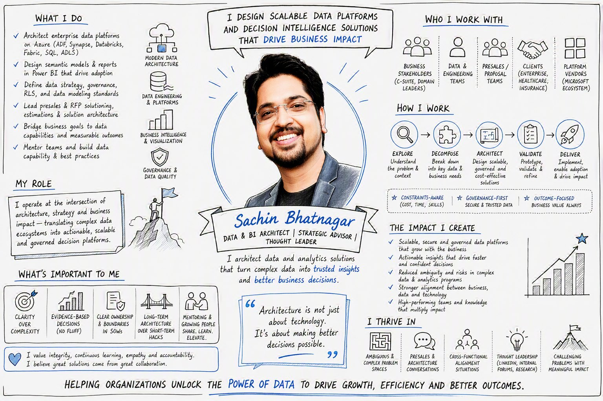

AI-compliant, governed BI
Row-level security, data classification, semantic models and governance that keep analytics trustworthy — and ready for Copilot and AI without leaking what shouldn't leave.
RLS & securityData classificationAI readiness
Independent Decision Intelligence Advisor
Independent and vendor-neutral, I help enterprises design BI, reporting, data architecture and strategy that people actually trust — governed, AI-ready, and built to move business outcomes, not just dashboards.
Outcomes
Every engagement is measured against decisions made faster, risk removed, and platforms teams can rely on. A few examples from real client work.
Re-modelled a supply-chain command centre from best-practice DAX up — render time cut from ~2 minutes to ~2 seconds.
Consolidated 200+ overlapping reports into 50 dynamic, self-service Power BI reports on a modern Azure warehouse.
Designed a scalable way to scan Power BI for sensitive data — the checkpoint a regulated bank needed to approve its uplift.
Standardised models, measure definitions and ALM so business users stop arguing about which number is right.
Service areas
Independent and tool-agnostic — I bring the right pattern for your stack, whether that's Microsoft Fabric, Power BI, Tableau, or a mixed cloud estate.
Row-level security, data classification, semantic models and governance that keep analytics trustworthy — and ready for Copilot and AI without leaking what shouldn't leave.
From executive scorecards to operational command centres — reports designed for adoption, tuned for performance, and wired to the decisions they support.
Dimensional models, lakehouse and warehouse design, ETL/ELT pipelines and gateway/security architecture — the foundation reporting is only as good as.
Current-state assessment, target architecture, governance operating model and a roadmap that ties every capability to a measurable business outcome.
Engagements
Most work begins as one of these, then grows. Each is defined by the problem it solves, who it's for, and what you walk away with.
Rescue
Migrate
Govern
Architect
Advise
Support
Why work with me
I operate at the intersection of architecture, strategy and business impact — translating complex data ecosystems into actionable, governed decision platforms.
No product to push and no bench to fill. My recommendation is whatever actually serves the decision — tool-agnostic across Microsoft, Tableau, GCP and AWS.
An MBA in Business Analytics and a hands-on architect's toolkit. I speak to the C-suite and to the semantic model in the same conversation.
Security, classification and RLS are designed in, not bolted on — so analytics stays trustworthy and AI-ready in the most regulated environments.
From OBIEE regulatory reporting for global banks to modern Fabric decision platforms — I've seen where reporting breaks and how to keep it standing.
Constraints-aware on cost, time and skills. Success is a faster, more confident decision — not a prettier dashboard.
I mentor teams and leave behind standards, documentation and reusable patterns so the improvement outlasts the engagement.
An early adopter of agentic BI development — I build Power BI as code (PBIP/PBIR, TMDL) using both open-source and first-party Microsoft Fabric agent skills. Reports and models are generated, reviewed and version-controlled — not hand-clicked. Not just governing data near AI; using AI agents to ship better BI, faster.
Selected work
A representative sample across regulated finance, healthcare, CPG and reinsurance. Client detail kept deliberately light.
Dashboards on operational data with logical inconsistencies, ~2-minute renders and competing report versions — with little client-side data engineering.
Rebuilt the model to data-modelling and DAX best practice, authored an ALM lifecycle document, exposed data-quality issues, and controlled versions in SharePoint.
~2 minutes → ~2 seconds. A reusable, standardised model and one active version — smoother QA and promotion.
A global bank needed Power BI to meet stringent regulatory classification rules before wider rollout — a non-standard problem with no off-the-shelf answer.
As the sole Power BI specialist, designed a scalable way to extract data for external scanning of customer-identifiable data, working directly with the product group on preview DAX functions.
Delivered the checkpoint required for regulatory (RAC) approval of the classification uplift.
Usage-tracking dashboards across healthcare portals — but the presentation layer, wireframes and mappings didn't yet exist, and blockers stalled the data.
Joined mid-engagement, designed the presentation-layer model, built wireframes with the client, implemented dashboards on raw data, and fixed a VNet gateway issue.
Evolved the requirements, unblocked delivery, and left a data layer defined to modelling best practice.
A supermarket chain needed actionable, self-service insight from operational data on handheld and web — buried under 200+ overlapping reports.
Designed an interactive self-service BI solution on Azure, with critical KPIs and business reports built for quick decisions in the aisle and the office.
Consolidated 200+ reports into 50 dynamic reports — faster decisions, less noise.
A reinsurer's data-science team needed a governed cloud analytical sandbox and a centralised, well-modelled data repository.
Recommended a best-practice Azure architecture, designed the dimensional model, and supported data ingress/egress with the cloud integration team.
An end-to-end BI workload and sandbox the AI/ML team could build on.
A SaaS provider needed multi-customer BI content moved off GoodData to Power BI — fast, without losing best practice on either platform.
Learned the source platform, translated GoodData SQL to optimised DAX, and aligned multiple developers and approvers to keep delivery moving.
Multiple customers migrated with quick turnaround while holding QA standards.
How I work
The same five moves whether it's a two-week rescue or a multi-quarter platform. Governance-first, outcome always.
Understand the problem, the context and the decisions that actually depend on the data.
Break the ambiguity down into the key data, business needs and real constraints.
Design a scalable, governed and cost-aware solution — modelled to best practice.
Prototype, pressure-test and refine with stakeholders before scaling anything.
Implement, enable adoption and hand over standards so the value keeps compounding.
Experience & reach
Nearly two decades across enterprise BI — from modern Azure & Fabric decision platforms back to battle-tested OBIEE regulatory reporting.
Architect enterprise decision-intelligence platforms; drive presales & RFP solutioning; define BI strategy, governance and modelling standards; mentor and build capability.
Owned mobile upsell delivery for Copilot with experimentation & measurement frameworks; led Power BI architecture and governance across regulated finance, CPG and healthcare clients.
Assessed data landscapes and built scalable pipelines and models for clients across diverse domains and geographies, alongside presales and RFP work.
Led a 20-person BI practice; set BI standards, security and architecture; delivered modern warehouse and self-service BI across retail, gaming, manufacturing and aviation.
Led liquidity-management and European regulatory reporting on OBIEE across a complex legacy landscape — the deep-end grounding behind today's governance-first instincts.
A decade of enterprise OBIEE, Siebel Analytics and Informatica across life sciences, aviation and energy — where the reporting fundamentals were forged.
At a glance
How I think about data, decisions and the people who rely on them — the short version.

Book a call
A no-pressure discovery call to understand your data, your constraints and where an independent perspective would help most.